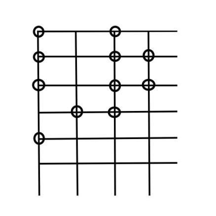
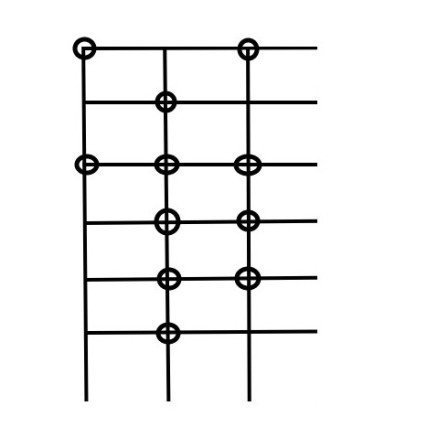
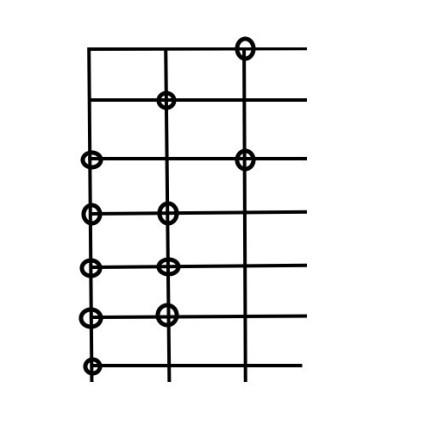
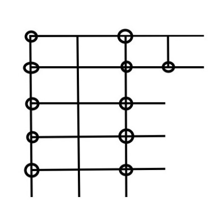
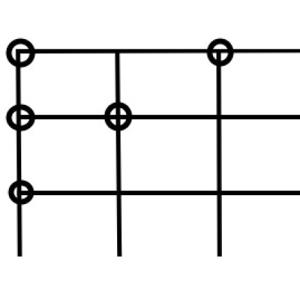
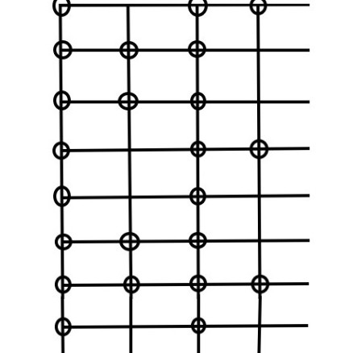
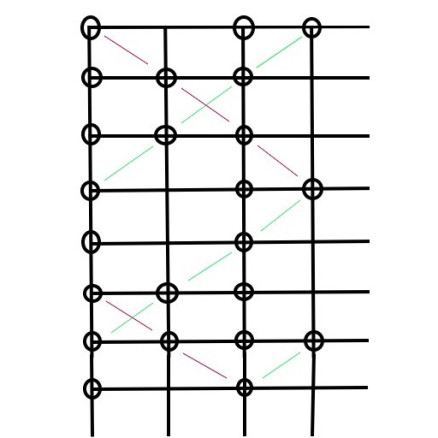

I was learning about a variety of Latin meters, including hendecasyllabic, when I came up with a way to visualize them that I found interesting. Classical Latin poetry has quantitative meter, meaning the value of a syllable is based on the length of time it takes to say, rather than its stress. The syllables of the meter might traditionally be represented as:
¯ ¯ ¯ ˘ ˘ ¯ ˘ ¯ ˘ ¯ ¯
Where ¯ represents a long syllable (2 morae) and ˘ represents a short syllable (1 mora).
The idea for the visualization is to draw a line, representing time, with evenly spaced ticks representing morae. Then, draw a dot on each tick on which a syllable starts. Now, wrap the line into rows, one row being n morae long. Triple meters will look more ordered when n = 3, quadruple when n = 4. Perhaps the whole point of this notation is that viewing the same meter with different n reveals something of their structure.
Here is hendecasyllabic in quadruple (n = 4) representation:
The central features, to my eyes, are the columns of dots on the first and third beats, which a musician would call the "strong" or "on" beats. This reveals the quadruple or duple nature of the meter, and the gap near the end shows the syncopation that gives the meter its playful swing. But another observation can be made, and that is the diagonal line extending up and to the right of the last dot. It actually includes the third dot as well, though this is not obvious because of the wrapping line. The slant of this line indicates that the dots are actually spaced thee morae apart (if it were slanted in the other direction, they would be five apart). And indeed, when we represent the meter in triple representation:
We see a strong central column. In fact, since we can start the meter at any point in the diagram, we might want to make this the first column:
The exciting thing about this meter, to me, is that it has a strong triple and quadruple component, and they dance together jauntily until they both land strongly on the last syllable. This gives the meter a unique sense of tension and resolution that I can hear, but I would not have noticed without examining the geometry like this.
I actually think hendecasyllabic is also well represented by changing n in the middle of the line, as such:
This makes the meter look much tidier and more natural than its representation as:
¯ ¯ ¯ ˘ ˘ ¯ ˘ ¯ ˘ ¯ ¯
But misses the simultaneous interplay between the triple and quadruple rhythms. It is interesting to look at many other meters using this method. I won't include them here, but I will include the particularly neat example of the short line in Sapphic strophe:
This little line consists of two columns, one of dots evenly spaced apart by two morae, the other by three. The columns begin together, and the line ends when they 'reconvene' after lcm(2,3) = 6 morae. This notation also led me to create my own meter, which is the analogue of the above, but with a two column, a three column, and a five column. In other words, it is the minimal, perfect meter that is duple, triple, and quintuple. The result is lcm(2,3,5) = 30 morae long, which might be pushing it, but I think it sounds alright. The meter is:
¯ ˘ ˘ ˘ ˘ ¯ ˘ ˘ ¯ ¯ ˘ ˘ ¯ ¯ ˘ ˘ ¯ ˘ ˘ ˘ ˘ ¯ ¯
Dum diddle diddle dum, diddle dum dum diddle,
dum dum diddle dum, diddle diddle dum dum.
You can see 'columns' of three (colored green) and of five (colored red):
